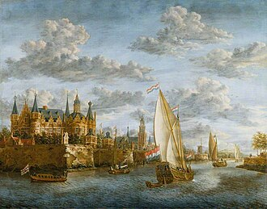
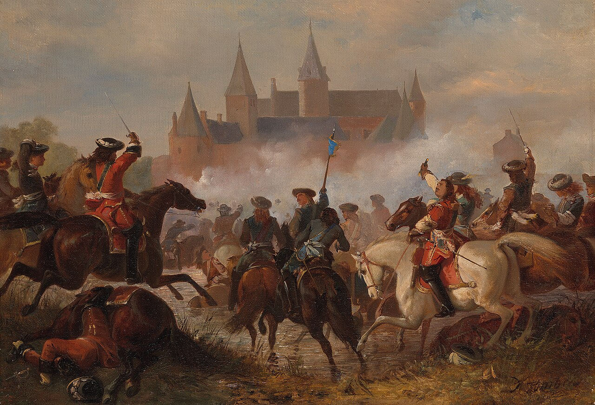
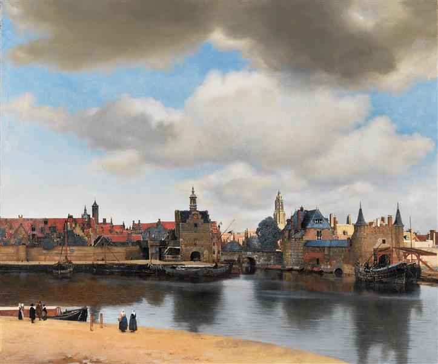
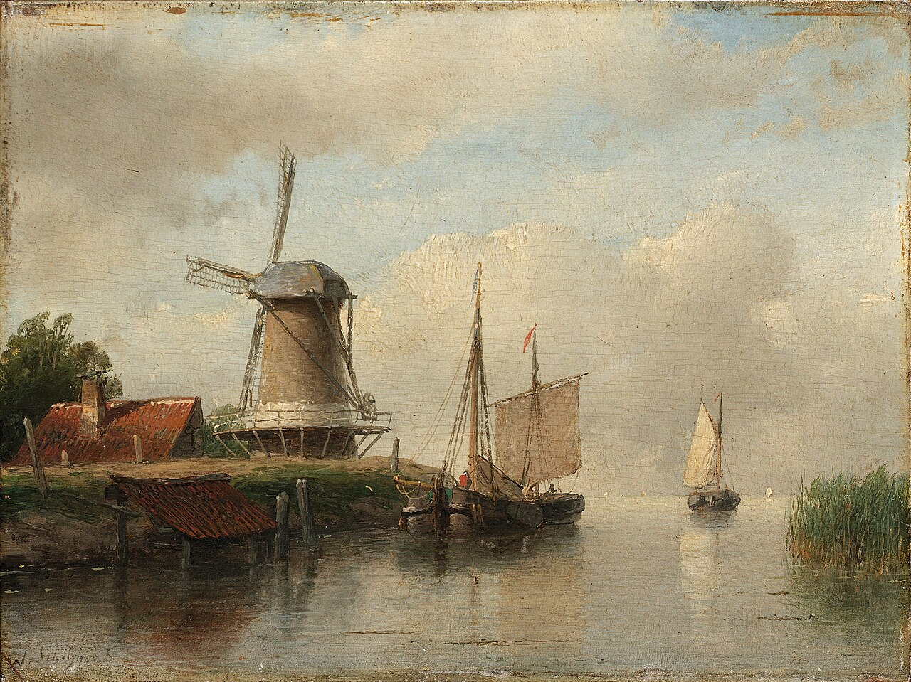

How Did the Dutch Republic Become Rich?
The Dutch Republic was (and is) not a large country. It lacked the population of France, the territorial reach of Spain, and the military resources of many of its rivals. Much of its land had to be protected from the sea. Yet by the seventeenth century it had become one of the wealthiest societies in Europe. Its merchants could be found across the continent and far beyond it. Amsterdam had become one of the world’s most important commercial centers. Dutch ships seemed to be everywhere.
In this article we will explore the reason why the Dutch ´won´. In Guns Germs and Steel Jared Diamond debates why Europe as a whole ´won´, but in this article I will lay out several reasons that drove Holland´s success in what the Dutch call ´their Golden Age´, which is 1600 to 1700.
The traditional explanation focuses on trade, and trade certainly mattered. But it is also important to realize that Holland´s trading success was facilitated from a combination of geography, institutions, agriculture, military defense, commerce, culture, and organization.
Living With Water
The Dutch relationship with water shaped their society long before it shaped their economy.
Large areas of the Netherlands were vulnerable to flooding. Dikes required constant maintenance and water levels & flows were artificially managed (great irrigation systems and canal-systems for example). The consequences of failure could be severe: the Dutch have always played a fine line between safe and unsafe with regard to water (Watersnoodsramp 1953 flooding the Province of Zeeland shows this). A neglected dike did not merely affect one farmer; it could affect entire communities - and many historians in fact argue that this ´poldermentality’ in fact is a key cultural driver behind Holland´s success: cooperation and community.
As a result, cooperation became a practical necessity. Local communities, landowners, and authorities were forced to work together in ways that were not always common elsewhere in Europe. Water boards emerged to coordinate these efforts, and some of these institutions survive to this day.
It would be simplistic to claim that water management directly created Dutch prosperity. Yet it encouraged habits that would later prove valuable: coordination, long-term planning, and a willingness to solve collective problems through negotiation rather than force.

The market of Amsterdam, by Emmanuel de Witte, 1680. The international trading market in Amsterdam was an international hub. Sometimes, they price-controlled some goods by storing some products for longer amounts of time decreasing their volume and thereby increasing demand
The ´mother nexus´, moedernegotie
When people think about Dutch wealth, they often imagine spices arriving from Asia. Contemporaries, however, understood that a different trade formed the real foundation of the republic’s economy - and in fact it is so important they called it ´de Moedernegotie´ which can be translated as ´the Mother foundation´. Indeed, this foundation underpinned The Republic´s success to a ´motherly extent´.
For much of the seventeenth century, Dutch merchants dominated commerce in the Baltic Sea. Grain from regions around modern Poland and the Baltic states flowed into Dutch ports in enormous quantities. Dutch merchants distributed this grain throughout Europe and consumed much of it at home.
This trade had consequences that went beyond commerce. Access to imported grain helped support growing cities and allowed Dutch agriculture to develop in a different direction. Rather than focusing solely on staple crops, many farmers specialized in activities that generated higher returns, including dairy production, livestock, vegetables, and horticulture.
Dutch merchants referred to Baltic commerce as the “Mother Trade.” The phrase reflected a recognition that long before global trade routes made the republic famous, regional trade networks had already created much of its prosperity.
A Nation of Cities
Compared with many European states, the Dutch Republic was unusually urban. Cities such as Amsterdam, Rotterdam, Leiden, Haarlem, Delft, and Utrecht formed a dense network connected by waterways and roads. Goods, people, and information could move relatively efficiently between them.
This urban environment encouraged specialization. Some cities became centers of manufacturing. Others focused on commerce or finance. The concentration of people and capital created opportunities that were difficult to replicate in more rural societies.
Visitors often remarked on the wealth of Dutch towns. Foreign observers described clean streets, active markets, and impressive merchant houses. Although prosperity was not distributed equally, the republic contained a remarkably large and economically active middle class by the standards of the time.
The result was an economy that depended less on aristocratic landownership than many of its neighbors and more on commerce, production, and investment.
Besides the cities the ´hinterland´, the supporting rural areas were also key in driving Holland´s success: they received a huge influx of artisans from the South (including the Huguenots, Portuguese Sephardic Jews, Flemish merchants, Brabant textile workers, German craftsmen, and French intellectuals) and there was, even in this rural area much specialization going on (which could then in turn be sold, via the cities, on the international market). So there was this harmonious, might I say golden, interplay between Dutch cities and their hinterland. The Hanzesteden all throughout the hinterland in the Netherlands further glued together ´Holland´ the strongest province in the Netherlands with the other provinces of the Dutch Republic (which is politically best regarded as a collective of provinces).

Castle on a River in Holland by Jacobus Storck (1680). This painting showcases the wealth of some cities that functioned as intermediary hubs connected the hinterland with the rest of the world. This is demonstrated in cities such as Amsterdam, Delft and Vlissingen (the Dutch province of Zeeland is often overlooked as being the second wealthiest province in the Republic, and the second most powerful seat in the VOC board - because in the current day and age, Zeeland is not as wealthy as the rest of the Netherlands).
Amsterdam’s Rise & Information infrastructure
By the early seventeenth century, Amsterdam had become one of Europe’s principal commercial centers.
Its importance did not rest solely on its port. Merchants came because the city offered services that made trade easier. Goods could be stored, insured, financed, bought, and sold in a single location. Buyers and sellers from across Europe could meet there.
The city also became a center of information. Merchants exchanged news about harvests, prices, wars, and shipping conditions. In an age when information traveled slowly, access to reliable information provided a significant advantage.
Amsterdam’s influence extended far beyond the Dutch Republic itself. Decisions made in its markets could affect prices across Europe. In this sense, the city functioned not merely as a port but as a hub within a larger commercial system.
.jpg)
Dutch Ships in a Calm Sea by Willem van de Velde II (c. 1665)
Trust and Commerce
Large-scale trade depends on more than ships and warehouses. Merchants lending money, insuring cargoes, or entering into contracts must believe that agreements will be honored. Economic growth becomes difficult when uncertainty is too great.
Besides the aforementioned ´poldermentality´, a strong Dutch cohesion furthermore fostered by Chrisitanity, lacking royal influence and being the first state with strong checks and balances in the government (some even call the Dutch Republic the very first democracy since antiquity). Besides those, the Dutch Republic developed institutions that helped reduce some of these risks. Courts, commercial customs, financial practices, and public borrowing systems contributed to an environment in which investors and merchants often felt more secure than they did elsewhere.
To be fair, these institutions were not perfect. Commercial disputes occurred regularly, and financial crises were hardly unknown. Nevertheless, the Dutch gained a reputation for reliability that helped attract capital. This reputation became an economic asset in its own right.
A Different Political System
The Dutch Republic occupied an unusual position within seventeenth-century Europe.
Most neighboring states were monarchies governed by kings. The republic instead consisted of provinces and cities that retained significant autonomy. Political power was divided among various institutions, local elites, and the House of Orange.
The system frequently produced disagreements and delays. Decisions could take time. Different provinces often pursued different interests.
Yet this decentralization also meant that commercial interests enjoyed considerable influence. Merchants, urban elites, and provincial authorities all played important roles in public life. Economic concerns therefore occupied a central place in political decision-making.
The republic was far from democratic by modern standards, but it differed noticeably from the more centralized monarchies that surrounded it.
Wealth and Survival
Over the span of the Dutch golden age its neighbouring countries sought to repress Dutch free trade ability to an incrementally and ever increasing rate, this resulted in the ´Disaster Year´ or Rampjaar of 1672, where the very existence of the Netherlands was tested by a fierce coalition of English, Germans and French.
Yet the Dutch possessed resources that had been accumulated over decades. Fortifications existed because previous generations had funded them. Fleets could be maintained because the economy generated the necessary revenue. Alliances could be supported because the republic had access to capital.
The Dutch Water Line, which deliberately flooded parts of the countryside, slowed the French advance and bought valuable time. Combined with military resistance and diplomatic developments, it helped prevent a complete collapse.
The crisis revealed an important relationship between economics and power. Wealth did not guarantee security, but it provided options that poorer states often lacked.

French troops invading the Dutch Republic during the rampjaar of 1672. Condé aan de Rijn by Karel Frederik Bombled (Created between between 1837 and 1897)
Religion and Relative Tolerance
Religion also played an important role in shaping the Dutch Republic. Although the Dutch Reformed Church held a privileged position, the republic was especially well known for its relative religious tolerance compared with much of seventeenth-century Europe. This also meant that information was not censored, and that a climate of ´the trade of information´ (book publishing and selling) was fostered in the Netherlands. Intellectuals were naturally attracted to this. Catholics, Lutherans, Mennonites, Jews, and later Huguenot refugees were often allowed to live and work in Dutch cities, even if they did not enjoy full political equality. This atmosphere attracted skilled artisans, merchants, printers, and financiers from across Europe, many of whom brought valuable expertise, commercial networks, and capital with them. Religious diversity also encouraged a culture in which practical cooperation often took precedence over ideological uniformity. While tolerance had clear limits and should not be confused with modern religious freedom, it nevertheless helped make the Dutch Republic an attractive destination for talent and investment, strengthening both its economy and its position as Europe's leading commercial hub.
Education and Literacy
Another often overlooked advantage of the Dutch Republic was its exceptionally high level of literacy. Influenced in part by Protestantism's emphasis on reading the Bible, the republic invested heavily in schools and education. By seventeenth-century standards, literacy rates among both men and women were remarkably high, particularly in the towns. A population that could read, write, and calculate was better equipped for commerce. Merchants could maintain detailed accounts, correspond with partners across Europe, understand contracts, and respond quickly to changing market conditions. Education also encouraged social mobility, allowing talented individuals from modest backgrounds to participate in trade, administration, and the professions. In an increasingly commercial society, literacy became an important economic asset.

View of Delft by Johannes Vermeer (c.1660-1661)
The Wealth of the Sea
Before the Dutch dominated global trade, they dominated one of Europe's most valuable fisheries. The North Sea herring fishery employed tens of thousands of sailors, fishermen, shipbuilders, and merchants. Dutch innovations, such as gibbing—the practice of cleaning and preserving herring immediately after it was caught—allowed ships to remain at sea for longer periods while delivering a higher-quality product to market. Herring became one of the republic's most important exports, generating substantial wealth long before spices and Asian trade captured Europe's imagination. Equally important, the fishing industry trained generations of experienced sailors who would later crew the merchant fleets that made Dutch commerce so successful.
Knowledge, Printing, and Innovation
The Dutch Republic was not only a commercial center but also one of Europe's leading centers of learning and innovation. Universities, particularly Leiden, attracted scholars from across the continent, while Amsterdam became one of Europe's foremost publishing capitals. Books that were censored elsewhere were often printed and distributed from the republic, helping ideas circulate freely during the Scientific Revolution. This intellectual climate produced remarkable figures such as Christiaan Huygens, whose work advanced astronomy and physics, Antonie van Leeuwenhoek, whose microscopes opened an entirely new world of biology, and Hugo Grotius, whose writings laid important foundations for international law. Scientific knowledge improved navigation, cartography, engineering, and commerce, while the thriving printing industry spread new discoveries rapidly throughout Europe. In this way, knowledge itself became an economic resource that reinforced the republic's commercial success.

Portrait of Anthonie van Leeuwenhoek who lived from 1632 to 1723 by Jan Verkolje (1680-1686). Antonie van Leeuwenhoek was a Dutch scientist from Delft who became one of the founders of microbiology. Using powerful microscopes that he built and improved himself, he was the first to observe tiny living organisms in water, blood cells, bacteria, and sperm cells. His discoveries revealed a hidden microscopic world and greatly advanced biology and medicine during the Dutch Golden Age.
The World's Greatest Merchant Fleet
Trade depended not only on what the Dutch bought and sold, but also on how efficiently they transported goods. By the seventeenth century, the Dutch possessed the largest merchant fleet in Europe, with thousands of vessels operating across the Baltic, the North Sea, the Atlantic, and eventually the Indian Ocean. Central to this success was the fluyt, a cargo ship specifically designed for commerce rather than warfare. The fluyt could carry large quantities of cargo with a relatively small crew, making it significantly cheaper to operate than many competing ships. Lower transport costs allowed Dutch merchants to undercut their rivals and dominate not only Dutch trade, but also the shipping of goods between other European countries. In effect, the Dutch became the freight carriers of Europe, earning profits simply by moving other nations' goods more efficiently than anyone else.
Finance and the Birth of Modern Capital Markets
Commerce on the scale achieved by the Dutch Republic required sophisticated financial institutions. Amsterdam developed into Europe's leading financial center, where merchants could borrow money, insure cargoes, exchange currencies, and invest capital with remarkable efficiency. The establishment of the Bank of Amsterdam in 1609 helped stabilize commercial transactions by providing a trusted banking system and reliable currency for international trade. At the same time, the Amsterdam Exchange enabled investors to buy and sell shares in trading companies, creating one of the world's first highly liquid capital markets. Public borrowing, government bonds, marine insurance, and increasingly sophisticated financial instruments allowed the republic to mobilize enormous amounts of capital at relatively low interest rates. This financial infrastructure became one of the Dutch Republic's greatest competitive advantages, enabling merchants and governments alike to undertake ventures that would have been prohibitively risky or expensive elsewhere in Europe.
The VOC and WIC
No discussion of the Dutch Golden Age would be complete without the Verenigde Oostindische Compagnie (VOC) and the West-Indische Compagnie (WIC). Founded in 1602, the VOC became the world's first large joint-stock multinational corporation, raising capital from thousands of investors while enjoying a government-backed monopoly over Dutch trade in Asia. Its network of trading posts stretched from the Cape of Good Hope to Japan (as the sole trading partner because of their lack of religious influence and extensive world-trade network, allowing Japan to trade with the world behind ´closed doors´), importing spices, tea, porcelain, silk, and other luxury goods that generated enormous profits. The WIC focused on the Atlantic world, establishing colonies and trading networks in the Americas and West Africa. It played a major role in sugar production, privateering, and, regrettably, the transatlantic slave trade. Although these companies became symbols of Dutch global power, it is important to recognize that they built upon an already prosperous commercial economy. The Baltic 'Mother Trade,' efficient shipping, advanced finance, and thriving cities had laid the foundations long before the VOC made the republic famous across the globe.
.jpeg)
This artwork portraits the VOC’s Asian trading-post network, which was immense, and, besides the ´moedernegotie´ the most important trade for the Vereenigde Oost-Indische Compagnie.
Windmills and Industrial Efficiency
The Dutch also made unusually effective use of wind power. While windmills existed elsewhere in Europe, nowhere were they employed on such a large industrial scale. Wind-powered sawmills dramatically accelerated the production of timber for shipbuilding, allowing Dutch shipyards to construct vessels faster and at lower cost than many competitors. Other mills processed grain, pressed vegetable oils, produced paper, manufactured pigments, and drained polders for agriculture. By harnessing renewable energy on such a large scale, the Dutch reduced production costs across numerous industries, strengthening both manufacturing and maritime commerce. The iconic Dutch windmill was therefore not merely a symbol of the landscape but an engine of economic growth.

Dutch ships moored on a river beside a windmill Andreas Schelfhout (date unknown) Windmills are regarded as quintessentially Dutch. The famous presence of Winmills´ in Don Quixote indicates to us how strong the Netherland´s influence was across the world, they really were one of the biggest, if not the biggest player in the world.
So not only do Windmills show the intricate harmony in a commercial way (facilitating ship-building through wood processing), but also in a more cultural or symbolic way. The Dutch WIC and VOC further symbolize, manifest the Dutch Republic´s influence. They were companies, but still they held all sorts of privileges that only states would have. So, in name of the Dutch republic they waged many wars and colonized many regions. In so doing they lef t a lasting and strong Dutch imprint on the history of the world
Conclusion
The rise of the Dutch Republic cannot be explained by a single invention, company, or trade route.
Its prosperity emerged from the interaction of many factors. Geography encouraged commerce. Water management encouraged cooperation. Baltic trade supported urban growth. Cities generated opportunities for specialization and investment. Institutions helped create trust. Political structures gave commercial interests unusual influence.
None of these factors alone would have transformed the republic into one of Europe’s leading powers. Together, they created conditions in which trade, finance, and urban development could flourish.
The Dutch Republic remained relatively small throughout its existence. What made it remarkable was not its size but its ability to make efficient use of the resources available to it.
That achievement helps explain why a country that seemed unlikely to survive became, for a time, one of the most influential societies in the world.